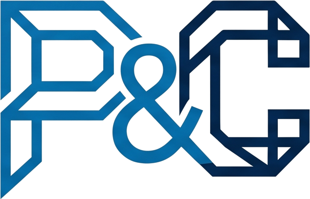

P&C Tec é a marca comercial da Perdigão & Carneiro Tecnologias LTDA (CNPJ 68.508.547/0001-36), sediada em Itabuna – BA. Somos uma empresa de tecnologia que desenvolve produtos de software próprios, com inteligência artificial aplicada de forma prática — não decorativa.
Nosso primeiro produto é o GTRestaurante, uma plataforma completa de gestão para restaurantes. Ele é o primeiro item de um portfólio que pretende crescer: a P&C Tec é a "casa-mãe" por trás de todos os produtos atuais e futuros.
Criar software que resolve problemas operacionais reais, com tecnologia própria e IA aplicada ao dia a dia de quem usa.
Ser reconhecida como uma casa de produtos digitais que constrói ferramentas essenciais para múltiplos setores, começando pela gestão de restaurantes.
Praticidade sobre exagero. Dados reais sobre promessas vazias. Proteção do know-how. Clareza na comunicação.
A P&C Tec segue uma arquitetura de marca-mãe + produtos endossados: a empresa assina institucionalmente (site, contratos, imprensa, documentos legais), enquanto cada produto tem sua própria identidade visual voltada ao cliente final.
P&C Tec
Paleta navy/azul · uso institucional: site corporativo
(generaltecnologia.com), papelaria, contratos, comunicação com investidores/parceiros,
imprensa, documentos jurídicos (ex.: registro no INPI).
GTRestaurante
Paleta laranja/escura própria (ver manual específico) · uso
voltado ao cliente final: app, landing page de vendas, materiais de marketing do produto.
Regra prática: a marca P&C Tec aparece sempre que o contexto é institucional/corporativo. A marca do produto aparece sempre que o contexto é voltado ao usuário final daquele produto específico. Rodapés de páginas de produto devem indicar "um produto P&C Tec" para reforçar a arquitetura sem competir com a marca do produto.
O logotipo é um monograma "P&C" desenhado em traços monolineares angulares (estilo "wireframe"), remetendo a circuitos e precisão técnica. As letras são vazadas (apenas contorno), com gradiente azul-claro → navy da esquerda para a direita, reforçando a transição entre inovação (azul) e solidez institucional (navy). O nome completo da marca — "P&C Tec" — é formado pelo monograma seguido da palavra "Tec" em texto.

À esquerda: versão colorida (gradiente azul → navy), para uso sobre fundo claro/branco. À direita: versão monocromática branca, para uso sobre fundo escuro/navy — inclusive sobre fotografias.
Mantenha ao redor do monograma um espaço livre equivalente à altura da letra "C". Nenhum elemento gráfico, texto ou borda de outro elemento deve invadir essa área. Nunca preencher o interior vazado das letras com cor, textura ou imagem.
Tamanho mínimo: o monograma não deve ser reproduzido com menos de 100px de largura (digital) ou 25mm (impresso) — abaixo disso os vazados internos das letras perdem legibilidade. Sempre usar a proporção original (aprox. 1,56:1 largura×altura).
Sempre use os arquivos oficiais (SVG/PNG) do repositório de marca — nunca capturas de tela ou recriações manuais.
Paleta inspirada em tecnologia e confiança: azul profundo (navy) como base institucional, azul vibrante como cor de ação/destaque, e cinza neutro para textos secundários.
Proporção recomendada: 60% navy/fundo escuro, 30% branco/cinza neutro (texto e espaços), 10% azul de ação (botões, links, destaques).
A fonte oficial da marca é a Inter (Google Fonts, gratuita, ampla disponibilidade de pesos). Ela é usada tanto no site institucional quanto no GTRestaurante, garantindo consistência entre a empresa e seus produtos.
| Uso | Peso | Tamanho (web) |
|---|---|---|
| Título principal (H1) | 800–900 (Black/Extrabold) | 40–72px |
| Título de seção (H2) | 700–800 (Bold/Extrabold) | 28–34px |
| Destaque / assinatura | 600–700, letter-spacing +2.5px, caixa alta | 13–15px |
| Corpo de texto | 400–500 (Regular/Medium) | 14–16px |
| Legenda / rodapé | 400–500 | 11–12px |
Diretos, técnicos sem serem herméticos, confiáveis. Falamos de tecnologia com propriedade, mas sempre traduzindo o benefício prático para quem lê.
Não usamos jargão vazio de "startup", não prometemos "revolução" sem entregar especificidade, não usamos tom informal em excesso em canais institucionais.
Institucional (P&C Tec): "Desenvolvemos produtos de software próprios, com inteligência artificial aplicada de forma prática para resolver problemas operacionais reais."
Produto (ex.: GTRestaurante): tom mais direto e comercial, focado em resultado imediato para o cliente — ver manual de marca do produto.
No site institucional, a marca aparece na aba do navegador (favicon), no menu de navegação e no rodapé — sempre a versão branca sobre fundo escuro, seguida da palavra "Tec".
Favicon: arquivo pc-tec-logo.png quadrado,
renderizado pequeno (16–32px) — testado e legível mesmo nesse tamanho por ser vazado/simples.
Header: logo branca + "Tec" em texto, altura entre 28–36px. Rodapé: mesma
combinação, reduzida (22–28px de altura), sempre acompanhada da razão social e CNPJ.
Foto de perfil (LinkedIn, Instagram, X) — fundo navy, símbolo centralizado
Capa/banner (LinkedIn 1584×396, X 1500×500) — logo centralizada, fundo navy com brilho azul sutil no canto
Regra: em avatares circulares, nunca deixar o monograma encostado na borda — usar zoom que deixe ~20% de margem. Em capas/banners, manter o logotipo sempre centralizado horizontalmente (o corte de exibição varia entre dispositivos).
Frente — apenas o logotipo, centralizado, fundo navy
Verso — dados de contato, fundo branco
Especificações de impressão: formato 9×5cm, papel couché 300g fosco, verniz localizado (spot UV) opcional no monograma da frente. Cores em CMYK conforme tabela da seção 5 — não usar RGB para arquivos de gráfica.
Modelo de referência — furo para cordão no topo
Faixa superior sempre em navy com a logo branca. Foto do colaborador em recorte circular com borda branca. Nome em Inter Bold, cargo em azul P&C. Faixa inferior (código de barras/QR de acesso, quando aplicável) sempre na base do cartão.
Modelo A4 — logotipo no topo esquerdo, rodapé institucional fixo
Margens de 2,5cm em todos os lados. Logotipo colorido, altura de 16mm, alinhado à esquerda no topo. Corpo do texto em Inter Regular, 11pt, cor #334155. Rodapé fixo com razão social, CNPJ, cidade e site, centralizado, em cinza neutro 8pt.
Diretrizes: logotipo colorido com no máximo 90px de largura, barra vertical azul→navy separando a marca dos dados de contato, nome em navy, cargo em azul P&C. Evitar incluir frases motivacionais, banners promocionais ou múltiplas cores fora da paleta oficial na assinatura.
Banner institucional (proporção 4:1) — para uso em anúncios, apresentações e materiais de parceiros
| Formato | Dimensão sugerida | Uso |
|---|---|---|
| Banner web horizontal | 1200×300px | Topo de site parceiro, e-mail marketing |
| Banner retangular | 300×250px | Anúncios display (Google Ads, portais) |
| Post social (quadrado) | 1080×1080px | Instagram/LinkedIn feed |
| Capa de rede social | 1584×396px | LinkedIn/Facebook capa |
| Slide de apresentação | 1920×1080px (16:9) | Capa/rodapé de slides institucionais |
Em apresentações (slides), usar a logo branca no canto inferior direito de cada slide (altura ~18px), e a versão colorida em tela cheia apenas no slide de abertura e encerramento, sobre fundo navy.
| Item | Ok? |
|---|---|
| Usei o arquivo oficial do logotipo (não recriei ou tirei print) | ☐ |
| Respeitei a área de proteção mínima ao redor do símbolo | ☐ |
| Usei as cores oficiais da paleta (não variações aproximadas) | ☐ |
| Usei Inter (ou fallback do sistema) como tipografia | ☐ |
| O contexto é institucional (P&C Tec) e não de um produto específico | ☐ |
| O tamanho está acima do mínimo definido neste manual | ☐ |
| Usei a versão correta (colorida em fundo claro / branca em fundo escuro) | ☐ |
| Em redes sociais, mantive margem de segurança no recorte circular/banner | ☐ |
| Em papelaria impressa, usei os valores CMYK (não RGB) da paleta | ☐ |
| Assinatura de e-mail/crachá/timbrado seguem o modelo de referência deste manual | ☐ |
Dúvidas sobre uso da marca: contato@generaltecnologia.com — Perdigão & Carneiro Tecnologias LTDA, CNPJ 68.508.547/0001-36, Itabuna – BA.